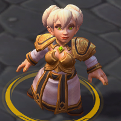
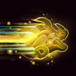
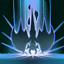
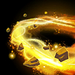
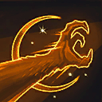
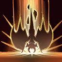
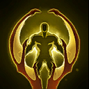
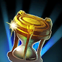
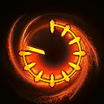
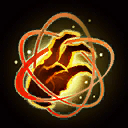

Chromie
Welcome to our Chromie guide for Heroes of the Storm. Here you will learn everything you need to know in order to play Chromie in a competitive environment, whether you play on your own or with a team.
Timewalker Build
| Level 1 | Level 4 | Level 7 | Level 10 | Level 13 | Level 16 | Level 20 |
|---|---|---|---|---|---|---|
|  |  |  |  |
The Timewalker Build is a fairly safe way to build Chromie. It offers decent damage amplification with talents such as Piercing Sands Icon Piercing Sands and Dragon's Eye Icon Dragon's Eye, while also offering decent crowd control with Slowing Sands Icon Slowing Sands to zone out enemy melee Assassins and Warriors.
Maximum Safety Build
| Level 1 | Level 4 | Level 7 | Level 10 | Level 13 | Level 16 | Level 20 |
|---|---|---|---|---|---|---|
 |
 |  |  |
We recommend The Safety Build during games in which the enemy team composition features several hard engaging Assassins and Warriors like E.T.C., Zeratul, or Tracer who can dive deep into your team's backline. Bronze Talons Icon Bronze Talons, in particular, should never be underestimated, as its Basic Attack range increase adds a lot of safety, while its empowered Basic Attacks causes Chromie to accumulate a lot of extra damage over time.
Dragon's Breath Build
| Level 1 | Level 4 | Level 7 | Level 10 | Level 13 | Level 16 | Level 20 |
|---|---|---|---|---|---|---|
|  |  |
The Dragon's Breath Build turns Chromie into a deadly glasscannon. Deep Breathing Icon Deep Breathing lays the foundation for Dragon's Breath Icon Dragon's Breath to hit really hard in the late game, especially if combined with Dragon's Eye Icon Dragon's Eye at Level 7. In order to take down individual targets as quickly as possible, knowing how to execute Temporal Loop Icon Temporal Loop becomes crucial. In order to maximize your success rate with Temporal Loop, please refer to our Abilities section and practice its execution in "Try" mode, which can be found at the Heroes of the Storm ingame shop.
Go Back